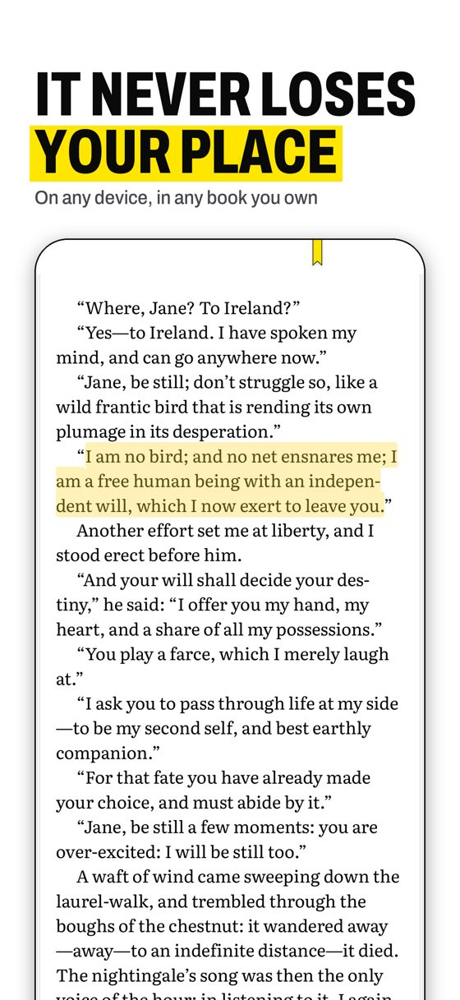
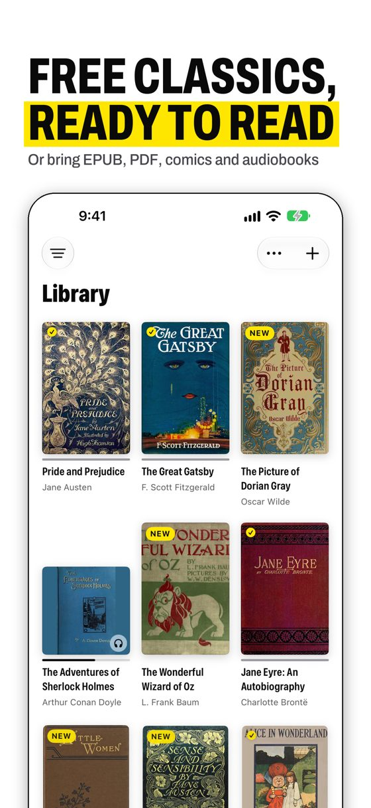
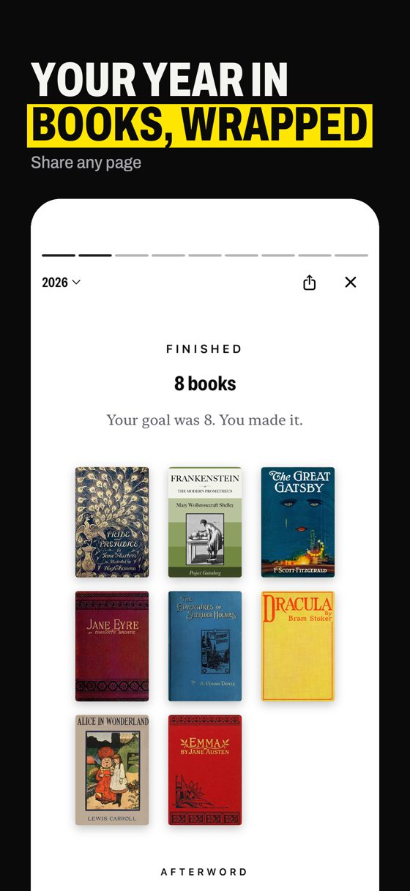

Every book ends with yours
Other readers stop at the last page. This one adds another: the passages that held you, the pages you went back to, the nights you read. It is made from your own reading, and it is yours to keep or share.
YOUR LAST PAGE
The Great Gatsby
So we beat on, boats against the current, borne back ceaselessly into the past.
You marked this on the last night.
Never spoiled
Ask about a character or get the story so far. The answers come only from the pages you have read. Book clubs hide notes from further in until you get there.
Never lost
Your place, highlights and notes follow you between iPhone and iPad through your own iCloud. Open a book and you are on your page.
Always yours
Your files stay your files. No account, no ads, no tracking, and no store to lock them into.
Reads what you own
- EPUB, PDF, MOBI, AZW3, FB2 and plain text
- Comics and manga: CBZ and CBR
- Audiobooks, with chapters and a sleep timer
- Free classics on the shelf from the first launch
- Read aloud, or follow along word by word
- Calibre-Web, Kavita, Komga, OPDS and Audiobookshelf
- Fonts for comfort, including OpenDyslexic
- English, Spanish and German


